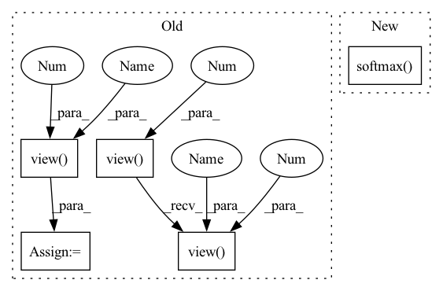

Pattern ID :37684
Before Change
// select the M output and gt
index_offset = torch.arange(0, batch_size, device=self.device).view(batch_size, -1).repeat(1, self.M).view(-1)
top_m_indices = indices.view(-1) + index_offset * N
tar_pred_prob_selected = F.normalize(tar_candit_prob.view(-1)[top_m_indices].view(batch_size , -1 ) )
candidate_gt_selected = candidate_gt.view(-1)[top_m_indices].unsqueeze(1).view(batch_size , -1 )
// classfication output
n_candidate_loss = F.binary_cross_entropy(tar_candit_prob, candidate_gt, reduction=reduction)
m_candidate_loss = F.binary_cross_entropy(tar_pred_prob_selected, candidate_gt_selected, reduction=reduction)After Change
// pred prob and compute cls loss
feat_in_prob = torch.cat([feat_in.unsqueeze(1).repeat(1, N, 1), tar_candidate], dim=2)
tar_candit_prob = F.softmax( self.prob_mlp(feat_in_prob).squeeze(-1), dim=-1) // [batch_size, self.N_tar]
_, indices = tar_candit_prob.topk(self.M, dim=1)
// select the M output and gtIn pattern: SUPERPATTERN
Frequency: 3
Non-data size: 5
Instances Fragment ID: 108247043
Project Name: henry1iu/tnt-trajectory-prediction
Commit Name: 5ede0b555e8fa59b52898db84b5e0d7b0758fca0
Time: 2021-04-26
Author: liu.jb.henry@gmail.com
File Name: core/model/layers/target_prediction.py
M Class Name: TargetPred
N Class Name: TargetPred
M Method Name: loss(6)
N Method Name: loss(6)
M Parent Class: nn.Module
N Parent Class: nn.Module
M File Name: core/model/layers/target_prediction.py
N File Name: core/model/layers/target_prediction.py
M Start Line: 94
M End Line: 101
N Start Line: 89
N End Line: 95
Before Change
decode_label is the ordinal labels for each position of Image I
N, C, H, W = x.size()
ord_num = C // 2
A = x[:, ::2, :, :]
B = x[:, 1::2, :, :]
A = A.view( N, 1 , ord_num * H * W)
B = B.view(N, 1, ord_num * H * W)
concat_feats = torch.cat((A, B), dim=1).contiguous()
if self.training:
ord_prob = F.log_softmax(concat_feats, dim=1)
return ord_prob.view(-1 , ord_num, H, W)
ord_prob = F.softmax(C, dim=1)[:, 1, ::]
ord_prob = ord_prob.view(-1 , ord_num, H, W)
ord_label = torch.sum((ord_prob > 0.5), dim=1).view(-1, 1, H, W)
return ord_prob, ord_label
After Change
ord_prob[:, 1::2, :, :] = prob[:, 1, :, :, :]
return ord_prob
ord_prob = F.softmax( concat_feats, dim=1) [:, 0, ::]
ord_label = torch.sum((ord_prob > 0.5), dim=1).reshape((N, 1, H, W))
return ord_prob, ord_label
Fragment ID: 108247042
Project Name: dontlovebugs/superviseddepthprediction
Commit Name: 07fe1714fc568b25bd80debe8dd3ab800ff576a8
Time: 2020-05-02
Author: wangxin_buaa@163.com
File Name: dp/modules/decoders/OrdinalRegression.py
M Class Name: OrdinalRegressionLayer
N Class Name: OrdinalRegressionLayer
M Method Name: forward(2)
N Method Name: forward(2)
M Parent Class: nn.Module
N Parent Class: nn.Module
M File Name: dp/modules/decoders/OrdinalRegression.py
N File Name: dp/modules/decoders/OrdinalRegression.py
M Start Line: 26
M End Line: 41
N Start Line: 28
N End Line: 45
Before Change
// select the M output and gt
index_offset = torch.arange(0, batch_size, device=self.device).view(batch_size, -1).repeat(1, self.M).view(-1)
top_m_indices = indices.view(-1) + index_offset * N
tar_pred_prob_selected = F.normalize(tar_candit_prob.view(-1)[top_m_indices].view( batch_size, -1 ) )
candidate_gt_selected = candidate_gt.view(-1)[top_m_indices].unsqueeze(1).view( batch_size, -1 )
// classfication output
n_candidate_loss = F.binary_cross_entropy(tar_candit_prob, candidate_gt, reduction=reduction)
m_candidate_loss = F.binary_cross_entropy(tar_pred_prob_selected, candidate_gt_selected, reduction=reduction)After Change
// pred prob and compute cls loss
feat_in_prob = torch.cat([feat_in.unsqueeze(1).repeat(1, N, 1), tar_candidate], dim=2)
tar_candit_prob = F.softmax( self.prob_mlp(feat_in_prob).squeeze(-1), dim=-1) // [batch_size, self.N_tar]
_, indices = tar_candit_prob.topk(self.M, dim=1)
// select the M output and gt Fragment ID: 108247047
Project Name: henry1iu/tnt-trajectory-predition
Commit Name: 5ede0b555e8fa59b52898db84b5e0d7b0758fca0
Time: 2021-04-26
Author: liu.jb.henry@gmail.com
File Name: core/model/layers/target_prediction.py
M Class Name: TargetPred
N Class Name: TargetPred
M Method Name: loss(6)
N Method Name: loss(6)
M Parent Class: nn.Module
N Parent Class: nn.Module
M File Name: core/model/layers/target_prediction.py
N File Name: core/model/layers/target_prediction.py
M Start Line: 94
M End Line: 101
N Start Line: 89
N End Line: 95